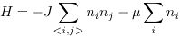

Diffusive Equilibrium
When two systems in thermal contact are maintained at different temperatures, energy is transported from the hotter system to the colder system. Similarly, when two systems are maintained at different chemical potentials, particles are transported from the system with a higher chemical potential to the one with a lower chemical potential.
In this Monte Carlo simulation we consider a two-dimensional lattice gas with the Hamiltonian

A site is occupied if ni = 1 and is empty if ni = 0. The restriction of a site to at most one particle is analogous to the strongly repulsive interactions between particles in a more realistic model of a gas and a liquid. The first sum is over all sites that are nearest neighbors and J is a positive constant. This term implies that particles within a certain distance are attracted to one another. Hence, this lattice gas model mimics the potential in a continuum fluid. The second term in H involves the chemical potential μ; the second sum is over all sites.
In our simulations the total number of particles in the system is fixed, and the two halves of the system can have different chemical potentials.
- Input the temperature, the lattice size L, the initial number of particles on the left and right halves of the lattice, and the chemical potential on the left and right halves. The particles are placed at random locations on their respective sides. There are periodic boundary conditions in the vertical direction. The left and right boundary columns are maintained with no particles.
- Choose a particle at random and a direction to move at random. If the lattice site in this direction is empty, then compute the change in energy ΔE to move the particle. If the move crosses the boundary between the left and right sides of the lattice, then ΔE includes the difference in the chemical potential.
- If ΔE < 0 or exp(-ΔE/kT) is greater than a uniform random number between 0 and 1, then accept the move. (The temperature T is in units where J/k = 1.)
- Repeat steps 2 and 3 many times.
- Plot the number of particles on the left and on the right as a function of time.
- Run the simulation with the default parameters. Describe what happens. Do particles move on average to the side with higher or lower chemical potential? Because the chemical potential is negative, explain the meaning of "higher" chemical potential.
- Without initializing a new system, reverse the chemical potential so that the right side has a higher chemical potential. Do the particles move in the opposite direction?
- Repeat the simulation in Problem 1 for different size lattices. Try 64 × 64 and 128 × 128. Estimate the time to reach equilibrium in each case. How do you know when equilibrium is reached? How does this time depend on L? Increase the number of particles on each side and repeat your analysis.
- Repeat the simulation in Problem 1 for different temperatures. What is the effect of increasing the temperature?
- Repeat the simulation in Problem 1, but set the chemical potential on each side to be the same. What happens?
- Suppose that once equilibrium has been established there are NL particles on the left-hand side and NR particles on the right-hand side. The total density is ρ = N/L2. Plot the difference |NL - N_R|/N as a function of Δμ = |μL - μR|. Generate similar plots for various temperatures and different size lattices keeping the total density fixed. Interpret your results in the limit of small and large Δμ.
- Discuss the relation of the lattice gas to the ising model.
Updated 27 February 2007.